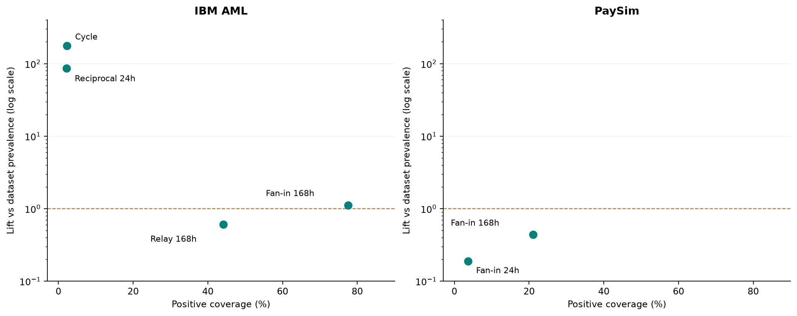
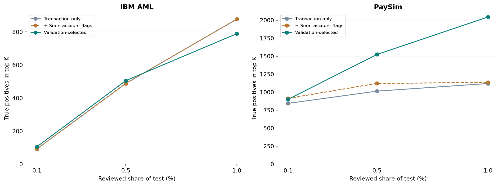

IBM · tín hiệu hiếm
31,06%Tỷ lệ laundering trong 132 giao dịch có cycle trên test; chỉ phủ 2,28% laundering.
Tín hiệu nào tập trung positive, thông tin nào được mô hình khai thác, và lợi ích xuất hiện ở đâu trong danh sách cần xem xét?
Tỷ lệ laundering trong 132 giao dịch có cycle trên test; chỉ phủ 2,28% laundering.
Chênh lệch ròng số fraud tìm đúng khi cùng xem 6.244 giao dịch; kết quả so với đối chứng chỉ thuộc tính giao dịch.
PaySim duy trì lợi ích khi mở rộng danh sách; IBM chuyển từ lợi thế nhỏ sang kém đối chứng ở mức 1% đã đánh giá.
Câu hỏi xuyên suốt là: quan hệ và lịch sử bổ sung giá trị gì so với chỉ nhìn giao dịch riêng lẻ, và giá trị đó phụ thuộc vào dữ liệu và năng lực kiểm tra thế nào?
Các task tạo thành một chuỗi bằng chứng: cấu trúc mạng → nhóm hành vi → thông tin cây sử dụng → kết quả ưu tiên kiểm tra. Mỗi bước trả lời một câu hỏi riêng; một pattern đáng chú ý chưa tự động trở thành một cảnh báo hiệu quả.
| Dataset | Giao dịch full | Tài khoản full | Tài khoản degree = 1 | Degree trung bình |
|---|---|---|---|---|
| IBM AML | 5.078.345 | 518.581 | 3,37% | 19,59 |
| PaySim | 6.362.620 | 9.073.900 | 94,83% | 1,40 |
PaySim có phần lớn tài khoản chỉ gắn với một giao dịch trong full graph. IBM ghi nhận nhiều giao dịch trên mỗi tài khoản hơn theo degree trung bình; chỉ số này chưa xác định số đối tác duy nhất hay mức lặp lại giữa cùng một cặp tài khoản. Đây là cơ sở đặt giả thuyết rằng lượng ngữ cảnh quan hệ có thể khai thác khác nhau giữa hai dataset; chưa chứng minh cấu trúc này gây ra chênh lệch hiệu năng.
Các chỉ số full graph không mô tả trực tiếp lượng lịch sử có sẵn tại một thời điểm quyết định. Vì vậy, câu chuyện cấu trúc phải được đối chiếu tiếp với feature và kết quả predictive theo thời gian.
Nguồn: đặc điểm cấu trúc, dataset overview.
Coverage trả lời tín hiệu có mặt ở bao nhiêu positive. Tỷ lệ positive trong nhóm và lift trả lời nhóm đó tập trung positive đến mức nào. Cần đọc cùng số giao dịch có tín hiệu; coverage cao có thể đến từ việc tín hiệu phổ biến trong cả dữ liệu bình thường.
| Nhóm trên test | Giao dịch | Positive | Positive trong nhóm | Bao phủ positive | Lift / nền |
|---|---|---|---|---|---|
| IBM · cycle | 132 | 41 | 31,061% | 2,28% | 175,73× |
| IBM · qua lại 24h | 257 | 39 | 15,175% | 2,17% | 85,86× |
| IBM · fan-in 168h | 706.216 | 1.395 | 0,198% | 77,54% | 1,12× |
| PaySim · fan-in 168h | 602.017 | 895 | 0,149% | 21,06% | 0,44× |

Nền test: IBM 0,177%; PaySim 0,340%. Bảng cohort, công thức và nguồn.
Cây PaySim được chọn sử dụng loại giao dịch, số tiền chuẩn hóa và lịch sử nhận tiền trong 168 giờ. Các nhánh cây cho thấy giá trị không chỉ đến từ việc phát hiện một pattern dòng tiền đã hiện diện.
| Điều kiện được giữ giống nhau | Lịch sử nhận tiền | Score của leaf |
|---|---|---|
| CASH_OUT; cùng nhánh số tiền chuẩn hóa | Không có lượt nhận tiền hợp lệ được ghi nhận trong 168h trước | 0,7904 |
| CASH_OUT; cùng nhánh số tiền chuẩn hóa | Có lịch sử nhận tiền hợp lệ trong 168h trước | 0,0000 |
Trong nhóm điều kiện này, sự vắng mặt của lịch sử nhận tiền là thông tin phân biệt mà cây sử dụng. Điều đó nối kết quả task history với hiệu quả mô hình dù cycle/relay gần như không cung cấp coverage fraud trên PaySim.
IBM dùng feature thuộc cả C/M/L. Trên PaySim, L có trong cấu hình nhưng không được cây được chọn dùng để chia nhánh; C không nằm trong cấu hình được chọn. Vì vậy, kết quả PaySim hỗ trợ giá trị của bối cảnh lịch sử, chưa chứng minh mô hình phát hiện đường dây hoặc cần đủ ba nhóm graph.
Nguồn: leaf rules PaySim, vocabulary loại giao dịch, feature usage.
Đối chứng T chỉ dùng thuộc tính giao dịch. T + novelty bổ sung cờ tài khoản đã xuất hiện trong lịch sử prefix; đây là đối chứng đơn giản cần giữ để đánh giá giá trị vượt quá thông tin đã thấy tài khoản. Mô hình chọn là full_fusion ở IBM và without_centrality ở PaySim.
| Dataset | Phần test được xem | K giao dịch | T tìm đúng | T + novelty tìm đúng | Mô hình chọn tìm đúng |
|---|---|---|---|---|---|
| IBM AML | 0,1% | 1.018 | 92 | 92 | 105 |
| IBM AML | 0,5% | 5.090 | 488 | 488 | 505 |
| IBM AML | 1,0% | 10.179 | 877 | 877 | 789 |
| PaySim | 0,1% | 1.249 | 844 | 913 | 900 |
| PaySim | 0,5% | 6.244 | 1.014 | 1.122 | 1.523 |
| PaySim | 1,0% | 12.488 | 1.120 | 1.134 | 2.044 |

PaySim: giá trị nổi bật là độ sâu hữu ích của danh sách. Ở 0,1%, novelty tìm đúng 913 fraud so với 900 của mô hình được chọn. Khi mở rộng tới 0,5% và 1%, mô hình được chọn lần lượt tìm đúng 1.523 và 2.044, cao hơn novelty 401 và 910. Đây là chênh lệch ròng, chưa xác định danh tính các fraud được thêm vào hoặc bị mất đi giữa hai danh sách.
| Dataset | Lượt xem thêm | T: positive thêm | T: hiệu suất biên | Mô hình: positive thêm | Mô hình: hiệu suất biên |
|---|---|---|---|---|---|
| IBM AML | 5.089 | 389 | 7,64% | 284 | 5,58% |
| PaySim | 6.244 | 106 | 1,70% | 521 | 8,34% |
IBM: hiệu quả phụ thuộc độ sâu kiểm tra. Mô hình tìm hơn T 17 laundering ở 0,5%, nhưng phần danh sách mở rộng tiếp theo tìm ít hơn T 105 laundering; tổng chênh lệch tại 1% thành −88. Kết quả chưa ủng hộ ưu thế nhất quán khi thay T bằng mô hình được chọn.
| Dataset | K ở 0,5% | Tỷ lệ tìm đúng trong danh sách: T → mô hình | Bao phủ positive: T → mô hình |
|---|---|---|---|
| IBM AML | 5.090 | 9,59% → 9,92% | 27,13% → 28,07% |
| PaySim | 6.244 | 16,24% → 24,39% | 23,86% → 35,84% |
IBM: cảnh báo 9.584 → 4.956; tìm đúng 869 → 500; cảnh báo nhầm 8.715 → 4.456. Danh sách ngắn hơn đi cùng mức phát hiện thấp hơn.
PaySim: so với T, mô hình tìm đúng 836 → 1.109 nhưng cảnh báo nhầm 196 → 799. Đối chứng novelty cũng tìm đúng 1.109 với 628 cảnh báo nhầm, ít hơn mô hình được chọn 171. Mô hình được chọn không dẫn đầu ở mọi mục tiêu test.
Nguồn: 54 dòng ngân sách, hiệu suất biên, 18 cấu hình và confusion.
Phân bố positive thay đổi mạnh giữa các kỳ: kỳ cuối chứa 60,92% laundering test IBM; hai kỳ cuối chứa 86,87% fraud test PaySim. Đếm số kỳ thắng như những kỳ có sức nặng bằng nhau sẽ bỏ qua cấu trúc này.

IBM có F1 cao hơn T ở 3/5 kỳ, nhưng recall thấp hơn ở cả 5/5 kỳ: một kết quả F1 cao hơn chưa đồng nghĩa tìm được nhiều laundering hơn. PaySim cải thiện recall ở cả năm kỳ quan sát; hướng cải thiện này chưa xác nhận khả năng khái quát ngoài dữ liệu mô phỏng.
| Bằng chứng | Hàm ý hiện tại | Câu hỏi kiểm chứng tiếp theo |
|---|---|---|
| IBM: cycle/reciprocal tập trung laundering trong nhóm nhỏ | Giữ như giả thuyết rà soát nhóm hành vi chuyên biệt | Mức tập trung có lặp lại ở giai đoạn khác? Các nhóm này bổ sung positive nào cho danh sách hiện tại? |
| PaySim: lịch sử tạo giá trị ở danh sách sâu hơn | Đánh giá mô hình theo năng lực kiểm tra dự kiến | Nếu chọn theo ngân sách trên validation, lợi thế còn giữ ở giai đoạn mới? |
| IBM: không có ưu thế nhất quán theo ngân sách/recall | Giữ đối chứng và nêu rõ đánh đổi | Có nhóm hành vi nào hưởng lợi và nhóm nào bị giảm phát hiện? |
| C/L có giá trị mô tả; lợi ích predictive khác nhau | Nối các task bằng vai trò bằng chứng | Thông tin nào giúp người kiểm tra hiểu giao dịch hơn, dù không tăng metric tổng hợp? |
Các câu hỏi về positive mới/mất đi, tác động theo nhóm tài khoản và giải thích case cần predictions/feature ở từng giao dịch. Báo cáo này không suy các kết quả đó từ vài examples. Hướng dùng được nêu là đề xuất đánh giá tiếp, chưa phải quyết định triển khai ngân hàng.
Chi tiết bằng chứng và giới hạn: bản kỹ thuật. Số liệu thời gian: temporal insights.
Nguồn là các lần chạy full ngày 24/10/2026 và bản kiểm tra aggregate ngày 26/10/2026. Lift, hiệu suất biên, tỷ trọng positive theo kỳ và phân tích hòa điểm được tính bổ sung từ exports; không phải một lần huấn luyện hay đánh giá predictions mới.
Phương pháp: tham số và protocol. Phạm vi bằng chứng: reliability. Nghiệm thu aggregate gốc: completion.json. Kiểm tra revision hiện tại: revision_validation.json.
Giữ cả hai thư mục generated và business_report cạnh nhau để dùng các liên kết qua lại offline. Các hình, bảng và tài liệu dẫn trực tiếp đều nằm trong bộ này.